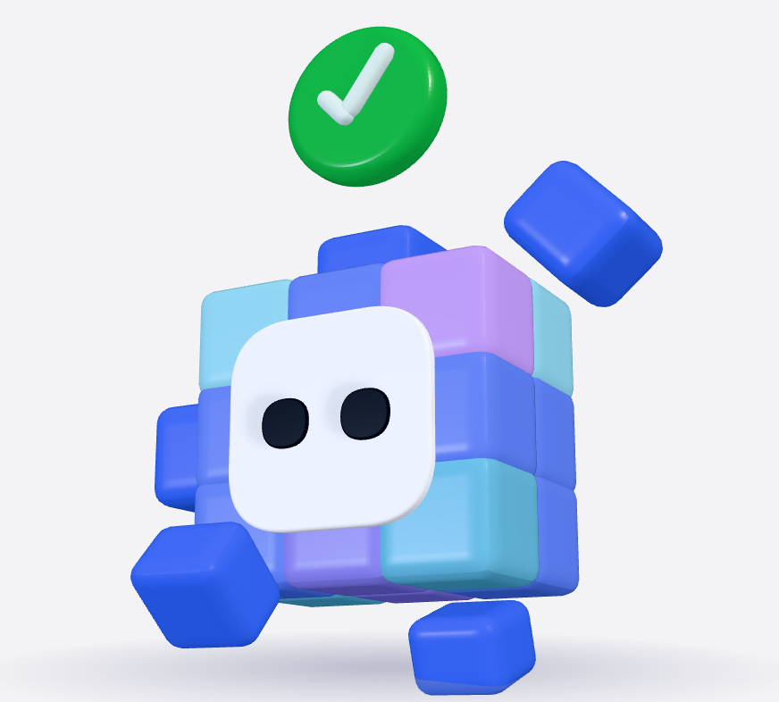
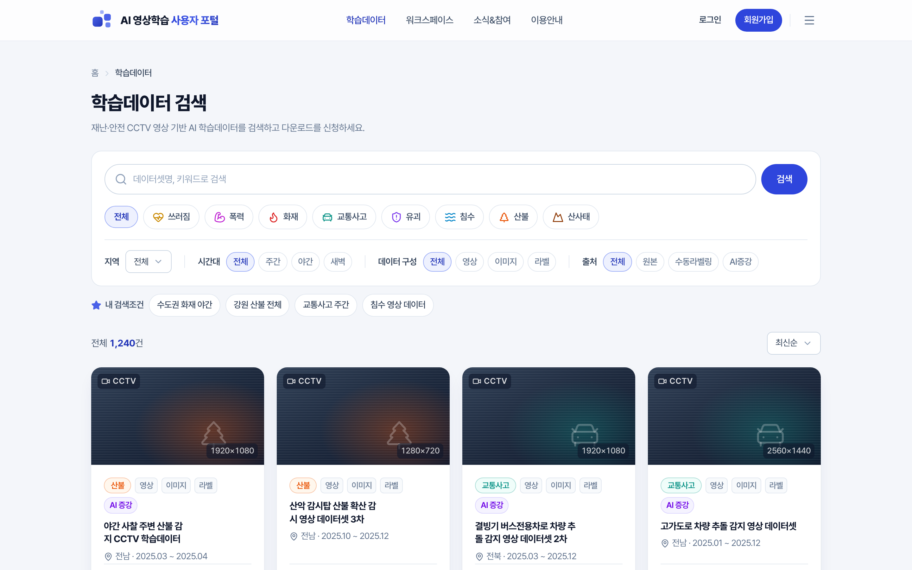
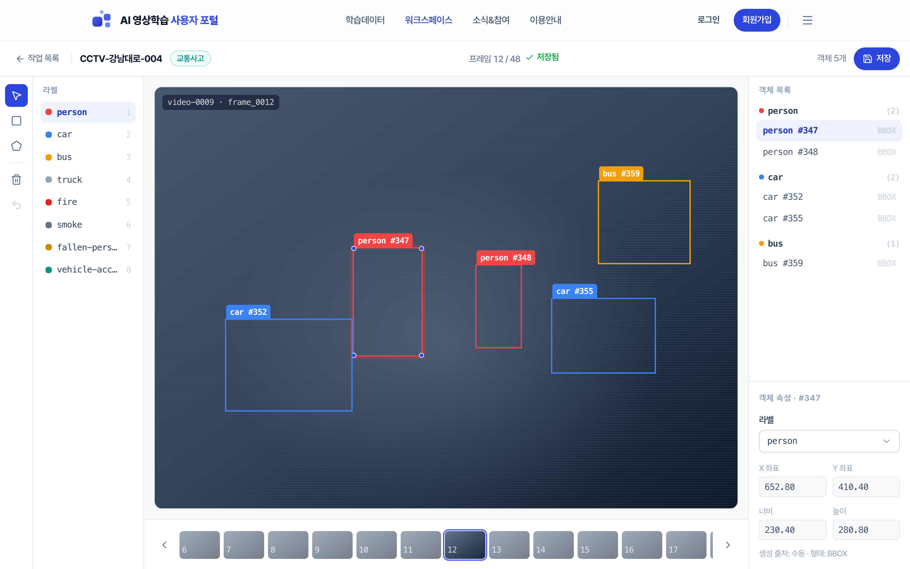
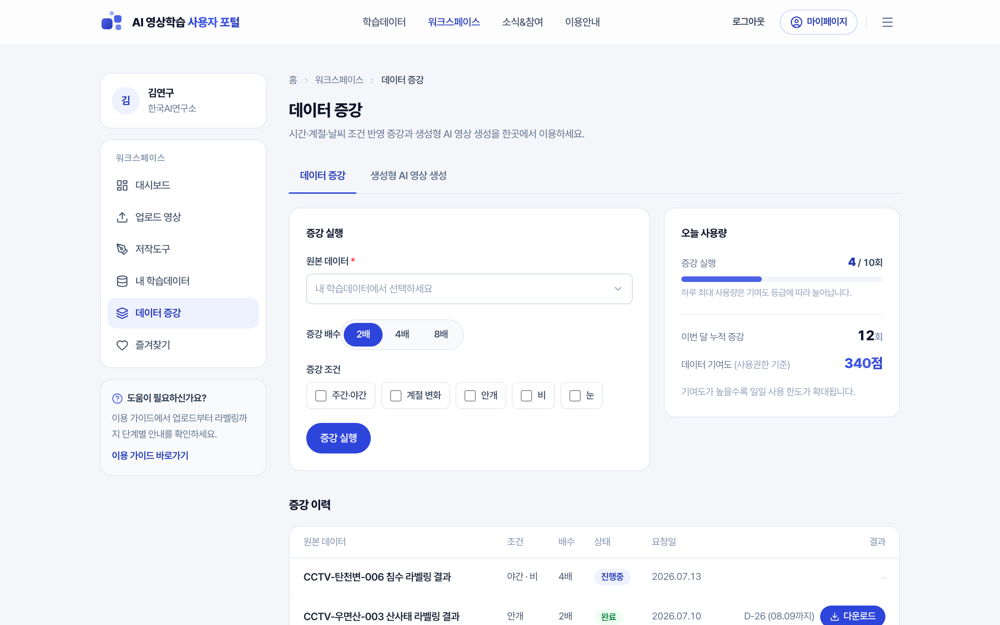
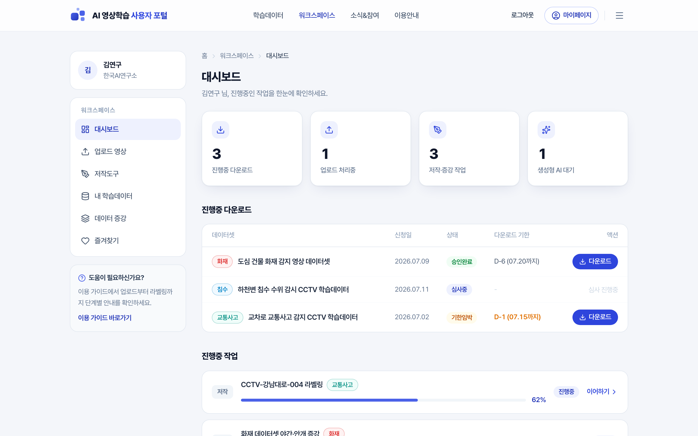

AI 영상학습 사용자 포털 · 기획 장점 + 디자인 컨셉 v2
좋은 서비스를,
왜 어렵게 써야 할까?
A사이트라는 큰 데이터 플랫폼이 이미 있습니다.
우리는 무엇을 다르게 기획했고, 그걸 어떤 얼굴로 보여줄까요.
기획의 장점과 디자인 컨셉, 두 가지를 이야기합니다.
지금의 데이터 포털1막 · 기획
강력한데,
어렵습니다
국내 대표 데이터 플랫폼에는 방대한 데이터가 있습니다.
그런데 막상 쓰려면 분류와 데이터 유형으로 찾아 들어가고,
실제 영상은 받아봐야 확인됩니다.
받은 다음엔 다른 도구로 나가 작업해야 합니다.
전문가에게도 번거롭고, 처음 온 기업과 연구자에겐 벽이 됩니다.
우리만의 데이터1막 · 기획
방식보다 먼저,
데이터가 다릅니다
지자체 CCTV가 실제로 담은 재난·안전 현장입니다.
산불·침수·교통사고처럼 좀처럼 모으기 힘든 장면을,
실제 사건 그대로 학습데이터로 만들었습니다.
범용 데이터셋에는 없는, 우리만의 원천입니다.
산불침수화재교통사고유괴쓰러짐폭력산사태
A사이트 vs 우리 포털1막 · 기획
같은 데이터 포털,
다르게 기획했습니다
| 구분 | A사이트 | 우리 포털 |
|---|
| 검색 |
분류·데이터 유형 중심으로 찾는다 |
이벤트 유형, 상황에서 바로 찾는다 |
| 미리보기 |
실물 영상·이미지는 받아봐야 안다 |
받기 전에 썸네일·구성·기한을 본다 |
| 데이터 제작 |
받아서 다른 도구로 나가 작업한다 |
저작·증강·생성을 포털 안에서 한다 |
| 관리 |
신청·다운로드가 흩어져 챙기기 번거롭다 |
상태·남은 기한을 한곳에서 챙긴다 |
가장 큰 차이1막 · 기획
A사이트가 받아 가는 저장소라면,
우리는 안에서 만드는 작업 포털입니다.
A사이트는 데이터를 내려받으면 끝입니다.
라벨링도 증강도 생성도, 받아서 다른 도구로 나가야 합니다.
우리는 그 전부를 포털 안에서 합니다.
라벨링
데이터 증강
생성형 AI
우리 기획, 세 가지1막 · 기획
찾기 · 만들기 · 챙기기를 쉽게
찾기 쉽게
상황에서 바로
산불 영상이 필요하면 산불을 누르면 됩니다. 분류를 외울 필요 없이 상황에서 찾고, 받기 전에 미리 봅니다.
이벤트 유형 8종 · 미리보기 카탈로그
필요한 장면을 헤매지 않고 바로
만들기 쉽게
나가지 않고
라벨링, 증강, 영상 생성을 포털 안에서 바로 합니다. 받아서 다른 도구로 옮겨 다닐 필요가 없습니다.
저작도구 · 데이터 증강 · 생성형 AI
외부 도구·외주 없이 준비 시간 단축
챙기기 쉽게
곁에서 알려주며
지금 어디까지 처리됐는지, 언제까지 받을 수 있는지 곁에서 알려 줍니다. 상태를 몰라 답답할 일이 없습니다.
처리 상태 · 다운로드 기한 D-day
기한 놓쳐 다시 신청할 일 없이
디테일까지1막 · 기획
큰 그림만 그린 게 아닙니다
검색 조건 즐겨찾기자주 쓰는 검색 조건을 저장해, 다음엔 한 번에 불러옵니다.
다운로드 기한 D-day받을 수 있는 기한을 목록에 D-day로 병기해 놓치지 않게 합니다.
진행중 작업 경고다운로드·저작 중 로그아웃하면 먼저 알려 주고 종료합니다.
유효기간 파기 안내업로드·생성물은 보관 기한을 명시하고, 만료 시 안전하게 삭제합니다.
출처 표식원본·수동 라벨링·AI 증강을 구분해 데이터 출처를 밝힙니다.
즐겨찾기 해제 확인실수로 지우지 않도록, 해제 전에 한 번 더 확인합니다.
디자인 컨셉2막 · 디자인
쉬워야
진짜다
좋은 데이터일수록, 쓰는 사람이 쉬워야 합니다.
기획에서 세운 이 장점을 디자인은 한 문장으로 잇습니다.
처음 온 사람도 헤매지 않는 얼굴을 만듭니다.
왜 캐릭터인가2막 · 디자인
어려운 길을,
대신 안내합니다
캐릭터는 귀여우려고 만든 게 아닙니다. 복잡한 데이터 과정을 처음 온 사람도 이해하도록, 곁에서 길을 안내하는 장치입니다. 검색부터 저작과 완료 안내까지, 헤맬 만한 곳마다 나타나 다음 걸음을 알려 줍니다.
낮은 진입장벽단계 안내친근한 첫인상
사용자 경험2막 · 디자인
흐름은 딱 셋입니다
 Find찾고
Find찾고
상황에서 검색해 필요한 데이터를 발견하고, 미리 보고 고릅니다.
→
 Make만들고
Make만들고
포털 안에서 라벨링·증강·생성으로 필요한 학습데이터를 만듭니다.
→

Use쓰고
워크스페이스에 담아 반출하고, 기한까지 챙겨 활용합니다.
룩앤필2막 · 디자인
밝고, 넓고, 말이 쉽게
밝은 톤관제 대시보드가 아니라, 누구나 드나드는 공공 포털의 밝은 얼굴로.
넓은 여백정보를 빽빽이 채우지 않습니다. 눈이 쉴 자리를 남겨 한 번에 하나씩 읽히게.
쉬운 말전문 용어 대신 사람의 말로. 버튼 하나에도 무슨 일이 일어나는지 그대로 적습니다.
Design Concept
좋은 서비스를,
어렵지 않게.
실제 화면이미 만든 것
말이 아니라, 이미 화면입니다

찾기이벤트 유형 검색 · 미리보기

만들기저작도구 · 라벨링

만들기데이터 증강 · 생성형 AI

챙기기상태 · 기한 대시보드
이 네 화면은 A사이트에는 없습니다. 우리 기획의 장점은 이미 목업 화면으로 존재합니다.
AI 영상학습 사용자 포털
받는 곳이 아니라,
만드는 곳.
데이터를 내려받는 곳을 넘어, 찾고 만들고 쓰는 작업 포털로.
한국지역정보개발원 · 행정안전부 · 감사합니다